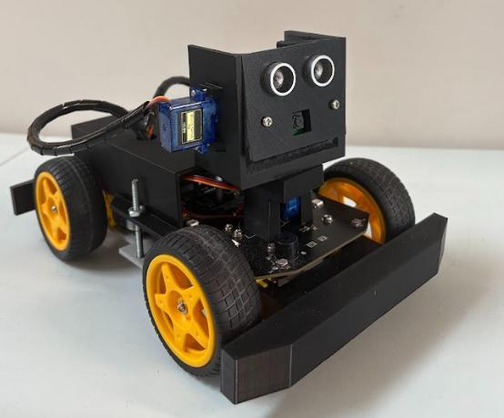
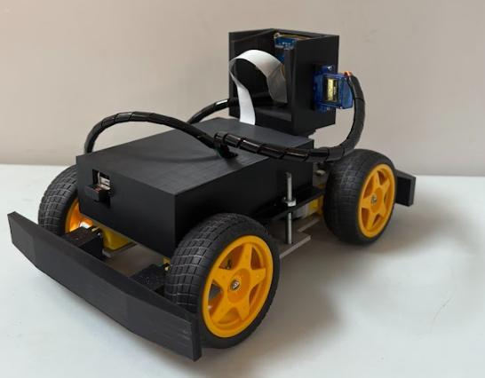
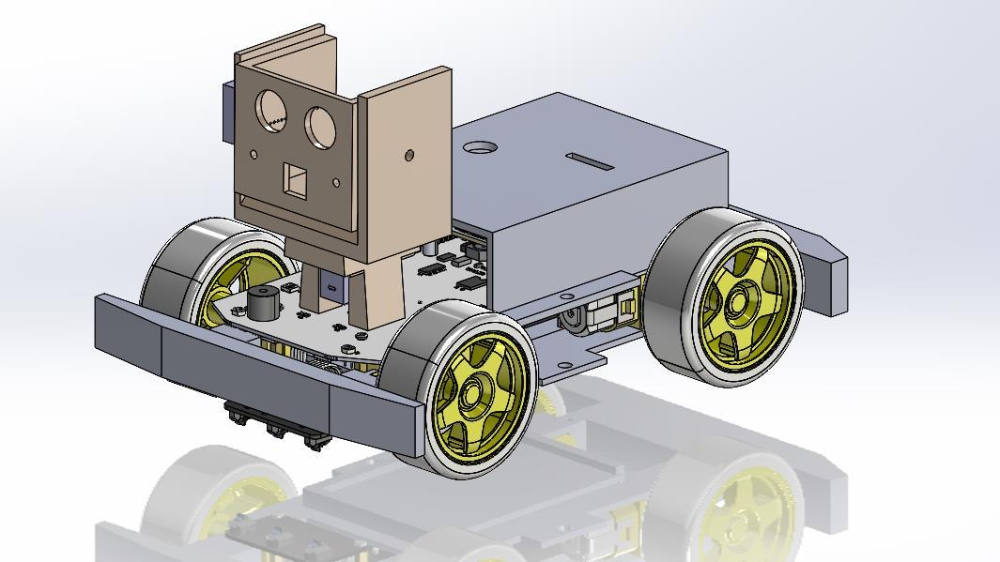

Integrated robotics project · 2026
ROS 2 Autonomous Robot
A five-person team project combining manual control, autonomous driving, perception, safety logic, and a custom two-axis sensor gimbal.
Verified resultPassed manual, autonomous, perception, safety, and integration tests—including a five-minute run without node failure or communication loss.
- Context
- AISE 4020
- Team
- Five students
- Platform
- Freenove 4WD, Raspberry Pi 4
- Tools
- ROS 2, Python, OpenCV, SolidWorks
Build a mobile robot that could switch safely between manual and autonomous driving.
A Raspberry Pi robot with ROS 2 control nodes, PS4 teleoperation, autonomous motion, camera person detection, ultrasonic obstacle sensing, and a custom two-axis sensor gimbal.
The complete system passed its control, sensing, safety, and integration tests and ran for five minutes without a node failure or communication loss.
The completed robot
The final assembly packaged the compute hardware, drive electronics, bumpers, camera, ultrasonic sensor, servos, and routed cabling into one mobile platform.



Three parts of the system
Each part had a specific job: choose and arbitrate motion commands, detect hazards, or keep the sensors mechanically aligned.
Tests and limitations
What was tested
- Manual driving and immediate manual override
- Switching between manual and autonomous modes
- Ultrasonic obstacle stopping and person-detection stopping
- Unified ROS 2 launch and five-minute integrated operation
What remained
Communication latency, inconsistent detections, and stop-turn behavior required tuning during integration. This was a validated academic prototype, not a production or safety-certified autonomy system.
This was a collaborative five-person academic project covering ROS 2 software, mechanical design, system integration, testing, and publication.